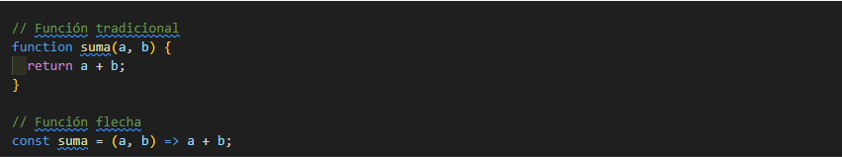
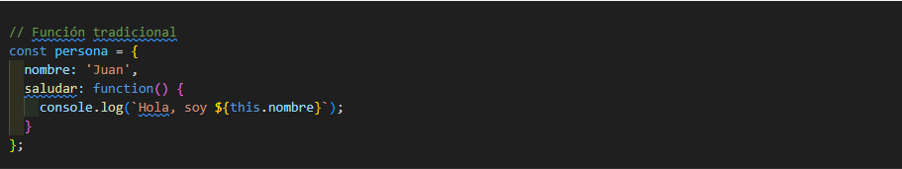
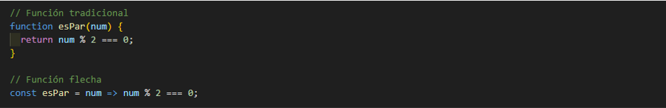

- FUNCIONES FLECHA
Las funciones flecha son una forma más concisa y elegante de escribir funciones en JavaScript.
- CARACTERISTICAS
- SINTAXIS CORTA
En lugar de escribir la palabra clave function, simplemente usas una flecha =>, lo que hace que tu código sea más corto y fácil de leer.

Las funciones flecha permiten una forma más concisa de escribir funciones en JavaScript. En el ejemplo, suma es una función que recibe dos parámetros a y b, y devuelve su suma. La versión con función flecha tiene menos código y hace lo mismo que la versión tradicional.
- EL LEXICO DE THIS
Una de las diferencias clave con las funciones tradicionales es que las funciones flecha no tienen su propio this. En cambio, heredan el this del contexto en el que fueron creadas. Esto puede ser útil en ciertas situaciones donde el contexto es importante.
ahora con la funcion flecha seria:
En este ejemplo, map() recibe una función que eleva al cuadrado cada número en el array numeros, y la versión con función flecha es más concisa.
- IDEAL PARA FUNCIONES ANONIMAS
Son geniales cuando necesitas pasar funciones anónimas como argumentos, por ejemplo, en métodos de array como map(), filter(), reduce(), etc.

ahora con la funcion flecha seria:

En este ejemplo, this en una función flecha no se refiere al objeto en el que se encuentra, sino al contexto global. Por lo tanto, this.nombre será undefined. Las funciones flecha no tienen su propio this, sino que heredan el this del contexto en el que fueron creadas.
- MAS LEGIBLE
En muchos casos, las funciones flecha hacen que tu código sea más claro y fácil de entender, especialmente cuando se trabaja con funciones de una sola línea.

Las funciones flecha pueden hacer que tu código sea más legible, especialmente en funciones simples de una sola línea. La función esPar devuelve true si el número es par y false si no lo es.
- RETORNO IMPLICITO
Si la función flecha tiene solo una expresión, esta se devuelve automáticamente, lo que significa que puedes omitir la palabra clave return.
En este ejemplo, duplicar devuelve el doble del número pasado como argumento.
- NO SE USA NEW
Las funciones flecha no se pueden usar como constructores con el operador new, lo que significa que no pueden ser instanciadas.
con la funcion flecha seria:
En este ejemplo, PersonaFlecha lanzará un error si se intenta utilizar con new.
- CONCLUYENDO
las funciones flecha son una herramienta poderosa en JavaScript que puede hacer que tu código sea más limpio, más legible y más conciso, especialmente en situaciones donde necesitas funciones anónimas o funciones de una sola línea.
- Para mas informacion:
https://developer.mozilla.org/en-US/docs/Web/JavaScript/Reference/Functions/Arrow_functions
https://developer.mozilla.org/en-US/docs/Web/JavaScript/Reference/Functions/Arrow_functions
https://www.w3schools.com/js/js_arrow_function.asp